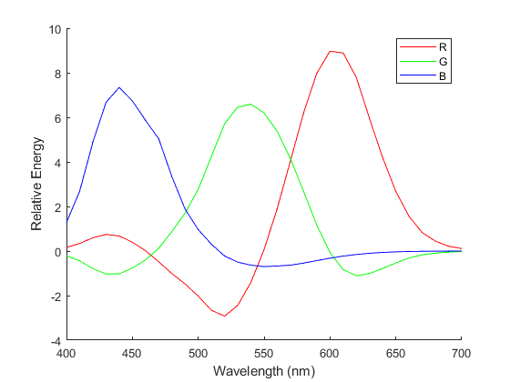

Contents
- Background
- Sampling the visible spectrum
- 1) (a) Make a graph of the 18th Macbeth surface illuminated by illuminant A (matlab variable cie_a).
- 1) (b) Make a graph of the 18th Macbeth surface illuminated by the fluorescent illuminant.
- 1) (c) Calculate the cone responses for the 18th Macbeth surface when illuminated by illuminant A.
- 1) (d) Calculate the cone responses for the 18th Macbeth surface illuminated by the fluorescent illuminant.
- 1) (e) Which of these will look more blueish and why?
- 2) (a) Calculate the monitor intensities to match the color of the 1st Macbeth surface when illuminated by illuminant A.
- 2) (b) Assume that there s no limit to the maximum intensity that can be produced by your monitor.
- 3) Calculate the monitor intensities for an S-cone isolating stimulus.
- 3) (b) Add an increment to the S-cone responses and compute the monitor intensities
- 3) (c) What are the monitor intensities corresponding to the largest possible
- 4) The CIE in 1939 set a standard for the color matching functions using 3
- 5) Imagine that you are to do the color matching experiment using the monitor
- 5) (b) Compute the 3x3 matrix that that
- 5) (c) Calculate and plot new color matching functions from
Background
cd('C:\Users\Rachel\Desktop\2023Fall\Perception\Assignment1')
Sampling the visible spectrum
spectrum=linspace(400,700,31); load surfaces size(macbeth) size(munsell) load illuminants %cie_a,daylight_65,fluorescent,illuminant_C,xenon_flash load cones load phosphors
ans =
24 31
ans =
359 31
1) (a) Make a graph of the 18th Macbeth surface illuminated by illuminant A (matlab variable cie_a).
signal1a=macbeth(18,:)' .* cie_a'; figure1=figure;clf; hold on; plot(spectrum, signal1a); xlabel('Wavelength (nm)'); ylabel('Reflected Energy'); title('Reflected energy of surfaces under cie_a')
1) (b) Make a graph of the 18th Macbeth surface illuminated by the fluorescent illuminant.
signal1b=macbeth(18,:)' .* flourescent'; figure2=figure;clf; hold on; plot(spectrum, signal1b); xlabel('Wavelength (nm)'); ylabel('Reflected Energy'); title('Reflected energy of surfaces under flourescent')
1) (c) Calculate the cone responses for the 18th Macbeth surface when illuminated by illuminant A.
coneSignal1a = cones * signal1a; disp(coneSignal1a);
65.2373 53.5643 61.9800
1) (d) Calculate the cone responses for the 18th Macbeth surface illuminated by the fluorescent illuminant.
coneSignal1b = cones * signal1b; disp(coneSignal1b);
66.1124 68.4875 182.9654
1) (e) Which of these will look more blueish and why?
%The first color (illuminated by the cie_a illuminant) may appear %more blueish since eventhough the second color has higher S-cone value, it %also has a significantly higher L-cone value. At the same time, for the first % color, the energy peak is between the blue range (450nm-495nm). % Thus overall, the first color is more balanced on the % spactrum and will appear more blueish.
2) (a) Calculate the monitor intensities to match the color of the 1st Macbeth surface when illuminated by illuminant A.
signal2a=macbeth(1,:)' .* cie_a'; coneSignal2a = cones * signal2a; monitor_to_cones = cones * phosphors'; cones_to_monitor = inv(monitor_to_cones); monitorSignals2a = cones_to_monitor * coneSignal2a; disp(monitorSignals2a);
1.0e+03 *
1.7947
1.9383
0.4740
2) (b) Assume that there s no limit to the maximum intensity that can be produced by your monitor.
Can this color be displayed properly onthe monitor? Why or why not?
%The RGB of this color is: R(1794.7), G(1938.3), B(474.0). Since there is %no maximum intensity and all numbers are bigger than 0, % so that it can be produced by the monitor, so the color can be displayed.
3) Calculate the monitor intensities for an S-cone isolating stimulus.
(a) Start with a neutral stimulus, with the monitor intensities set to be [1,1,1]. What are the cone responses for that stimulus?
phoSignal3a = phosphors'* [1, 1, 1]'; coneSignal3a = cones * phoSignal3a; disp(coneSignal3a);
0.2638
0.2257
0.1591
3) (b) Add an increment to the S-cone responses and compute the monitor intensities
that would evoke the new cone responses with the S-cones incremented. What's the largest S-cone increment that can be added (again, assuming that there s no limit to the maximum intensity)?
%coneSignalIncre=coneSignal3a+[0,0,x]'; %Z=cones_to_monitor*coneSignalIncre; Z_without_x=cones_to_monitor(2,1:2) * coneSignal3a(1:2); x_max=(Z_without_x)/1.3891; disp(x_max);
0.8790
3) (c) What are the monitor intensities corresponding to the largest possible
S-cone increment?
coneSignalIncre=coneSignal3a+[0,0,0.8790]'; monitorSignals3b = cones_to_monitor *coneSignalIncre; disp(monitorSignals3b);
1.8471
-0.2210
7.4849
4) The CIE in 1939 set a standard for the color matching functions using 3
monochromatic primaries of 440 nm, 550 nm, and 700 nm. Calculate and graph what these color matching functions should be using the cone spectral sensitivities. Set the intensity of the 700 nm primary to be much larger (80x) more than the intensities of the other primaries to plot all 3 color matching functions on the same scale.
P=zeros(31,3); P((440-400)/10+1, 3)=1; P((550-400)/10+1, 2)=1; P((700-400)/10+1, 1)=80; cmf=inv(cones*P)*cones; figure; hold on; plot(spectrum, cmf(3,:),'b'); plot(spectrum, cmf(2,:),'g'); plot(spectrum, cmf(1,:),'r'); xlabel('Wavelength (nm)'); ylabel('Relative Energy'); legend('440nm', '550nm', '700nm');
5) Imagine that you are to do the color matching experiment using the monitor
phosphors as the primaries instead of the monochromatic primaries that the CIE used. (a) Write an equation (an actual equation, not code) for the new color matching functions in terms of the old color matching functions, the cone spectral sensitivities, and the SPDs of the two sets of primaries. You will have to use the cone spectral sensitivities but you must not use any test lights.
%cones X cmf X Primary sensitivities=cones X phosphors SPD X Newcmf % Newcmf=(cones X phosphors SPD)^-1 X cones X cmf X Primary sensitivities
5) (b) Compute the 3x3 matrix that that
converts the CIE color matching functions to the new color matching functions. What are the numerical values of the entries in that matrix?
f=inv(cones*phosphors'); coenewcmf=f*cones*P; disp(coenewcmf);
8.8624 0.0655 0.6738 -1.9196 6.1927 -1.0220 -0.0999 -0.6997 7.3453
5) (c) Calculate and plot new color matching functions from
the original CIE color matching functions.
newCMF=coenewcmf*cmf; figure; hold on; plot(spectrum, newCMF(1,:), 'r'); hold on; plot(spectrum, newCMF(2,:), 'g'); plot(spectrum, newCMF(3,:), 'b'); xlabel('Wavelength (nm)'); ylabel('Relative Energy'); legend('R', 'G', 'B');